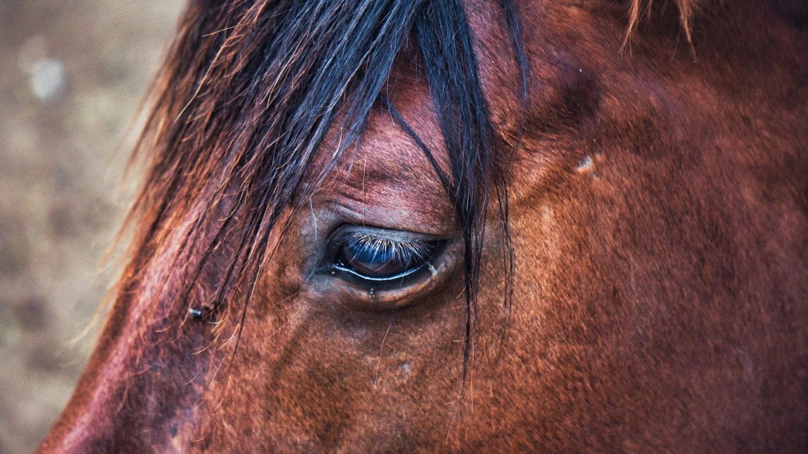
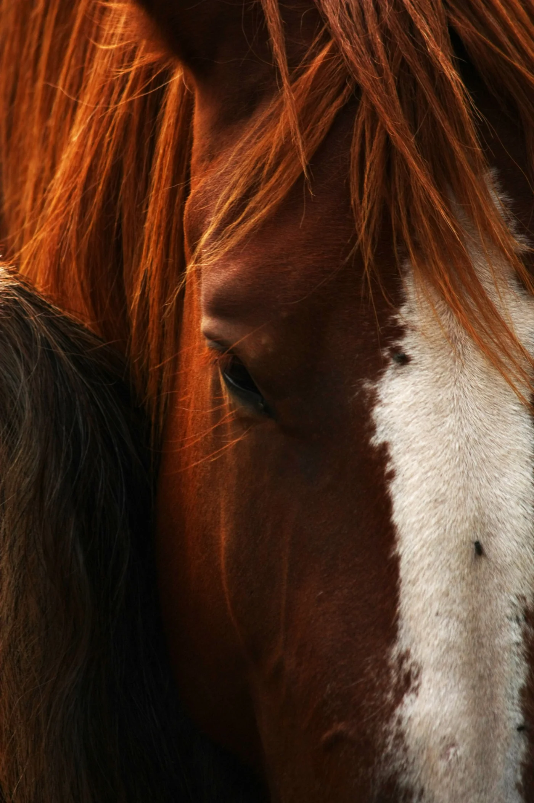

A GWK számomra nem egy márka, hanem egy történet, amely egy nagyon személyes úton indult el. A lovak mindig részei voltak az életemnek, de igazán akkor kerültem vissza hozzájuk, amikor édesapámtól megörököltem őket. Velük együtt nemcsak a lovakat kaptam meg, hanem mindazt az emléket, értékrendet és szeretetet is, amit ő hagyott rám.
A velük töltött idő újra emlékeztetett arra, mit jelent számomra a lovaglás.

Csendet.Kapcsolódást.Figyelmet.

Egy olyan világot, ahol minden mozdulat számít, és ahol jelen kell lenni, igazán. Ekkor született meg bennem a gondolat, hogy szeretnék valami maradandót alkotni. Valamit, ami nemcsak szép és funkcionális, hanem jelentéssel is bír.
A GWK így vált számomra tisztelgéssé édesapám emléke előtt, és mindaz előtt, amit a lovak tanítottak nekem. Minden GWK darab mögött ott van ez a szemlélet. A letisztult design, a minőségi anyagok és az apró részletek iránti odafigyelés mind azt a célt szolgálják, hogy ló és lovas harmóniában lehessen egymással.